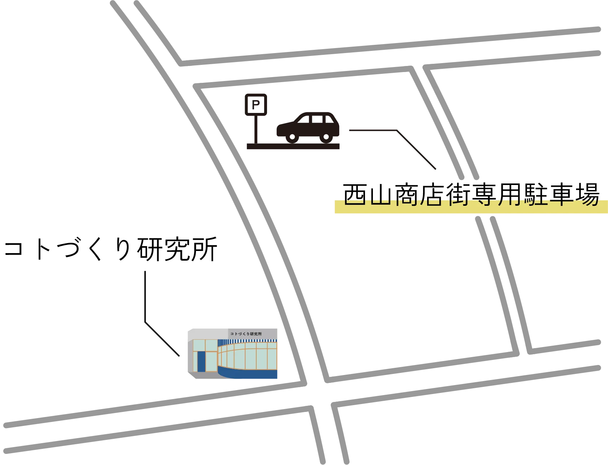

交通アクセス
住所
愛知県名古屋市名東区西山本通2丁目24
電話番号等
000-0000-0000
営業時間
イベント・ワークショップの開催予定につきましてはInstagramをご覧下さい。
駐車場をご利用のお客様
駐車場は西山商店街の駐車スペースをご利用下さい。
駐車可能な台数には限りがありますので複数台での駐車はご遠慮下さい

電車をご利用のお客様
地下鉄東山線星ヶ丘駅バスターミナル4番のりばより、市バス「幹星ヶ丘2（地下鉄猪高台行）」へご乗車いただき、西山本通二丁目で下車ください。約6分で到着します。